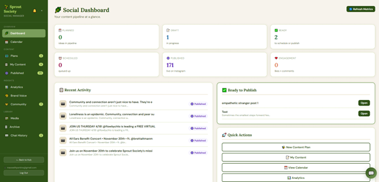
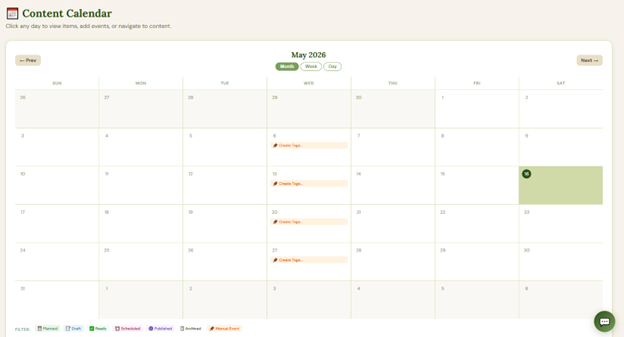
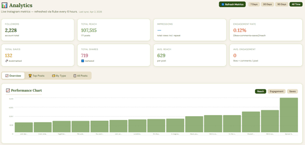
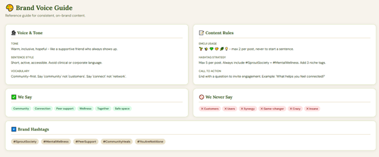
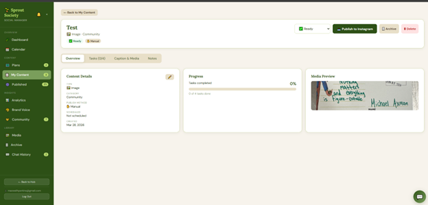
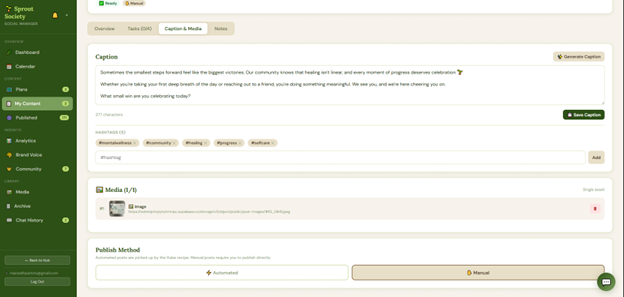

Maxwell Perkins
Vibe coder & low-code developer focused on AI-assisted internal tools.
I take real problems and turn them into fast, functional software.
Built for the non-profit Sprout Society, this relationship management tool tracks contacts,
communications, and events while integrating Claude to generate and import new contact profiles via JSON.
A tool designed to research, track, and draft grant applications. It utilizes Claude to identify opportunities and generate structured profiles for import, providing a centralized workspace to complete each application with speed and precision.
A lightweight tool for creating dynamic QR codes and tracking scan data in real time. Used for RSVP links on concert flyers and non-profit event marketing,
letting you see which flyers, in which locations, drive the most engagement.
Social Content Planner
In ProgressProblem: Managing social content for Sprout Society means juggling multiple paid tools for design, scheduling, approvals with no unified workflow.
Solution: A single social media manager hub that includes:
Goal: Replace paid scheduling software entirely: draft, design, approve, and publish from one place, with a human initiating every final post.
Current phase: Streamlining the interface, cutting unnecessary features, and stress-testing the automation pipelines to determine where human verification steps belong.

Dashboard: contacts, upcoming events, next actions, and overdue follow-ups

Content calendar with scheduled posts and publishing status

Instagram analytics pulled in via API for performance tracking

Brand asset library for consistent design across content

Content overview with task progress, metadata, and media preview

Caption and media editor with hashtag management and publish method selection